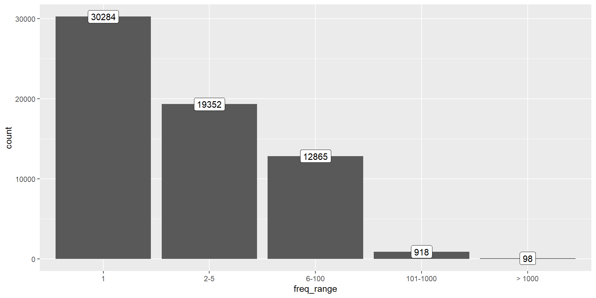

Methods of Corpus Linguistics (class 2)
usethis::use_git()In the future
For future projects, the workflow may be different; check Happy Git With R for a guide.
Initialize project
This only needs to be done once at the beginning.
Note
<url> is the url of your repository.
Initialize project
If you make changes on the remote, use git pull before making changes in the local repo.
Avoid .RData with Tools > Global Options > General > Workspace/History
You can work with Git(Hub) on the Git tab of RStudio or on the Git Bash Terminal
Initialize project
Optionally, you can start “new work” on a new branch and then merge it to main.
Tip
I will only look at what you push to the main branch.
Add corpus
Download the corpora from Toledo (mcl.zip file with various corpora) and copy/move the brown folder to your project. There are different options.
To be accessed with here::here("brown").
project
|_brown
|_project.Rproj
|_.gitignoreTo be accessed with here::here("corpus", "brown").
project
|_corpus
| \_brown
|_project.Rproj
|_.gitignoreTo be accessed with here::here("data", "corpus", "brown").
project
|_data
| \_corpus
| \_brown
|_project.Rproj
|_.gitignoreAdd corpus
We don’t want to track the corpus on git (because of size and licenses).
Open .gitignore.
Add a line for the folder to ignore, e.g. /brown/.
(Check git status!)
Add corpus
Easier to run the code again and to share it.
Load packages first.
Do not change your working directory; use here() or reliable relative paths.
Tip
You can add comments to explain what you did and even hierarchical sections!
Explore corpus
Explore corpus
In the console:
path_to_corpus = print(path_to_corpus)print(brown_fnames, hide_path = path_to_corpus)explore(brown_fnames)drop_re(brown_fnames, "/c[a-z]")Explore corpus
Create it on the script, inspect in the console (or from the script).
Tip
Check out the “freqlists” tutorial of {mclmtutorials} (learnr::run_tutorial("freqlists", "mclmtutorials")) to learn why we need the re_token_splitter argument.
Explore corpus
Frequency list (types in list: 63517, tokens in list: 1162192)
rank type abs_freq nrm_freq
---- ------ -------- --------
1 the/at 69013 593.818
2 ,/, 58153 500.373
3 ./. 48812 419.999
...[1] 1162192[1] 63517Tip
Check out the documentation
Explore corpus
Explore corpus
Explore corpus
Explore corpus

It might be in a README file, online, as a paper…
What time period(s) is/are covered?
What genre(s)? Language varieties?
Written? Transcripts of oral texts?
Is it a monitor corpus?
Licenses
Check also the permissions you have as user of the corpus.
Describe corpus
Create basic Quarto document
Set meta data on the YAML choosing output
Optional: render to check it’s working
Remove current text and write your own
Describe corpus
Inline code surrounded by backticks and starting with “r”.
Code chunks: to run arbitrary code, create tables and plots, print glosses with {glossr}.
Read external scripts with source() or with the code or file chunk options.
Describe corpus
The Brown corpus used in this project has `r prettyNum(n_tokens(flist))` tokens
and `r n_types(flist)` types,
giving us a type-token ratio of `r round(n_types(flist)/n_tokens(flist), 2)`.The Brown corpus used in this project has 1162192 tokens and 63517 types, giving us a type-token ratio of 0.05.
Describe corpus
Frequency list (types in list: 5, tokens in list: 239548)
<total number of tokens: 1162192>
rank orig_rank type abs_freq nrm_freq
---- --------- ------ -------- --------
1 1 the/at 69013 593.818
2 2 ,/, 58153 500.373
3 3 ./. 48812 419.999
4 4 of/in 35028 301.396
5 5 and/cc 28542 245.588Describe corpus
knitr::kable()| rank | orig_rank | type | abs_freq | nrm_freq |
|---|---|---|---|---|
| 1 | 1 | the/at | 69013 | 593.8175 |
| 2 | 2 | ,/, | 58153 | 500.3734 |
| 3 | 3 | ./. | 48812 | 419.9994 |
| 4 | 4 | of/in | 35028 | 301.3960 |
| 5 | 5 | and/cc | 28542 | 245.5876 |
Describe corpus
kableExtra::kbl()| rank | orig_rank | type | abs_freq | nrm_freq |
|---|---|---|---|---|
| 1 | 1 | the/at | 69013 | 593.8175 |
| 2 | 2 | ,/, | 58153 | 500.3734 |
| 3 | 3 | ./. | 48812 | 419.9994 |
| 4 | 4 | of/in | 35028 | 301.3960 |
| 5 | 5 | and/cc | 28542 | 245.5876 |
Describe corpus
In both cases, you might want to use the include: false chunk option to avoid printing neither the code itself or its output.
Describe corpus
Branches and remotes
The first time you try to push from a local branch you may get an error! Just follow the instructions, don’t panic :)
If you were in your explore-corpus branch and want to bring changes to main
Describe corpus